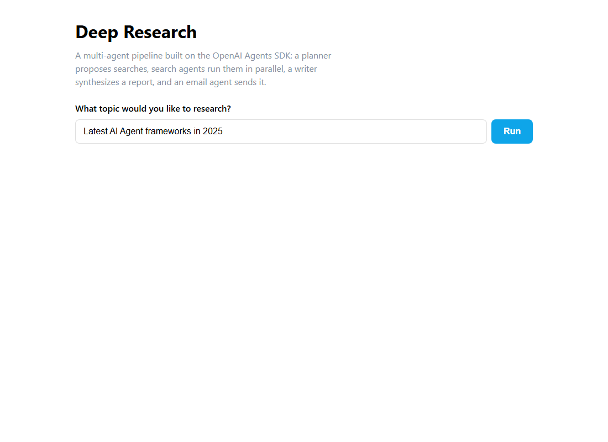

Week 2 · Day 5 — Finishing and Deploying Deep Research
Wire the deep-research team to a Gradio UI, email the finished report, and deploy it. Plus a React + TypeScript version of the research app.
Companion to Ed Donner's course · uv setup · Python (+ TypeScript/React where it fits) · code from the course repoDay 5 is the last day of Week 2, and the instructor promises it is "quick and easy and satisfying". We take the Deep Research team we built in a notebook on Day 4 and turn it into a proper little application: a folder of tidy Python modules, a manager class that reports its progress, and a Gradio web page that shows progress as the work happens. Then we look at how to put it online.
Nothing new is invented today. Every agent you already met on Day 4 — the planner, the search agent and the writer — moves into its own module almost unchanged. The email agent that formats the report as HTML and sends it with SendGrid comes over too. The two genuinely new pieces are the ResearchManager, which yields a status update after every step, and the Gradio UI that streams those updates to the browser while the team is running.
planner_agent.py, search_agent.py, writer_agent.py, email_agent.py, research_manager.py and deep_research.py. Same functionality, better organised.
The shape of the finished app
Lesson by lesson
One section per video, in the order you watch them. Each code block is what is on screen in that
video (the course repository as Ed recorded it in spring 2025). The model he uses everywhere,
gpt-4o-mini, has since been retired, so the Python blocks have two versions:
As in the video and Runs today (the same code with only the retired parts
swapped, each change marked with a comment). The TypeScript tab is a port of the "runs today" version using the
official @openai/agents package; each TypeScript file stands on its own, so save it as a
.ts file in the week2-ts/ project and run it with npx tsx <file>.
Video 19 · A modular research system with a Gradio UI
The Day 4 notebook as proper Python modules in 2_openai/deep_research/: one file per agent,
a ResearchManager that runs them, and deep_research.py, a Gradio page. Ed walks through each file
in Cursor, making three small edits as he goes (a cheaper search setting, a docstring and comments in the email tool,
and a clearer variable name in the UI), and explains why the manager yields. "Experiment in a notebook, then
turn it into modules." Each Python file has its TypeScript twin in the TypeScript tab; save them side by side in one
folder.
planner_agent.py
from pydantic import BaseModel
from agents import Agent
HOW_MANY_SEARCHES = 20
INSTRUCTIONS = f"You are a helpful research assistant. Given a query, come up with a set of web searches \
to perform to best answer the query. Output {HOW_MANY_SEARCHES} terms to query for."
class WebSearchItem(BaseModel):
reason: str
"Your reasoning for why this search is important to the query."
query: str
"The search term to use for the web search."
class WebSearchPlan(BaseModel):
searches: list[WebSearchItem]
"""A list of web searches to perform to best answer the query."""
planner_agent = Agent(
name="PlannerAgent",
instructions=INSTRUCTIONS,
model="gpt-4o-mini",
output_type=WebSearchPlan,
)from pydantic import BaseModel
from agents import Agent
HOW_MANY_SEARCHES = 20
INSTRUCTIONS = f"You are a helpful research assistant. Given a query, come up with a set of web searches \
to perform to best answer the query. Output {HOW_MANY_SEARCHES} terms to query for."
class WebSearchItem(BaseModel):
reason: str
"Your reasoning for why this search is important to the query."
query: str
"The search term to use for the web search."
class WebSearchPlan(BaseModel):
searches: list[WebSearchItem]
"""A list of web searches to perform to best answer the query."""
planner_agent = Agent(
name="PlannerAgent",
instructions=INSTRUCTIONS,
model="gpt-6-luna", # gpt-4o-mini in the video
output_type=WebSearchPlan,
)// planner_agent.py in TypeScript
import { Agent } from "@openai/agents";
import { z } from "zod";
export const HOW_MANY_SEARCHES = 20;
const INSTRUCTIONS = "You are a helpful research assistant. Given a query, come up with a set of web searches " +
`to perform to best answer the query. Output ${HOW_MANY_SEARCHES} terms to query for.`;
export const WebSearchItem = z.object({
reason: z.string().describe("Your reasoning for why this search is important to the query."),
query: z.string().describe("The search term to use for the web search."),
});
export const WebSearchPlan = z.object({
searches: z.array(WebSearchItem).describe("A list of web searches to perform to best answer the query."),
});
// The same names as types, so other files can write (item: WebSearchItem)
export type WebSearchItem = z.infer<typeof WebSearchItem>;
export type WebSearchPlan = z.infer<typeof WebSearchPlan>;
export const plannerAgent = new Agent({
name: "PlannerAgent",
instructions: INSTRUCTIONS,
model: "gpt-6-luna",
outputType: WebSearchPlan,
});planner_agent.py, line by line
| Line(s) | Code | What it does & why |
|---|---|---|
| 4 | HOW_MANY_SEARCHES = 20 | Still 20 from yesterday's demo; Ed promises to set it back to 3 before committing. Lower it yourself to keep the bill small. |
| 6-7 | INSTRUCTIONS = f"..." | The planner prompt from the notebook. |
| 10-15 | class WebSearchItem(BaseModel) | Reason, then query, each with its description underneath. |
| 18-20 | class WebSearchPlan(BaseModel) | The list of planned searches. |
| 23-28 | planner_agent = Agent(..., output_type=WebSearchPlan) | Exactly the notebook's planner, now importable from other files. |
planner_agent.ts, line by line
| Line(s) | Code | What it does & why |
|---|---|---|
| 5 | export const HOW_MANY_SEARCHES = 20; | export makes a name importable from other files. |
| 10-19 | schemas and matching types | z.infer turns a zod schema into a TypeScript type with the same name. |
| 21-26 | export const plannerAgent = new Agent({...}) | The planner. |
search_agent.py
from agents import Agent, WebSearchTool, ModelSettings
INSTRUCTIONS = (
"You are a research assistant. Given a search term, you search the web for that term and "
"produce a concise summary of the results. The summary must 2-3 paragraphs and less than 300 "
"words. Capture the main points. Write succintly, no need to have complete sentences or good "
"grammar. This will be consumed by someone synthesizing a report, so its vital you capture the "
"essence and ignore any fluff. Do not include any additional commentary other than the summary itself."
)
search_agent = Agent(
name="Search agent",
instructions=INSTRUCTIONS,
tools=[WebSearchTool(search_context_size="low")],
model="gpt-4o-mini",
model_settings=ModelSettings(tool_choice="required"),
)from agents import Agent, WebSearchTool, ModelSettings
INSTRUCTIONS = (
"You are a research assistant. Given a search term, you search the web for that term and "
"produce a concise summary of the results. The summary must 2-3 paragraphs and less than 300 "
"words. Capture the main points. Write succintly, no need to have complete sentences or good "
"grammar. This will be consumed by someone synthesizing a report, so its vital you capture the "
"essence and ignore any fluff. Do not include any additional commentary other than the summary itself."
)
search_agent = Agent(
name="Search agent",
instructions=INSTRUCTIONS,
tools=[WebSearchTool(search_context_size="low")],
model="gpt-6-luna", # gpt-4o-mini in the video
model_settings=ModelSettings(tool_choice="required"),
)// search_agent.py in TypeScript
import { Agent, webSearchTool } from "@openai/agents";
const INSTRUCTIONS = "You are a research assistant. Given a search term, you search the web for that term and " +
"produce a concise summary of the results. The summary must 2-3 paragraphs and less than 300 " +
"words. Capture the main points. Write succintly, no need to have complete sentences or good " +
"grammar. This will be consumed by someone synthesizing a report, so its vital you capture the " +
"essence and ignore any fluff. Do not include any additional commentary other than the summary itself.";
export const searchAgent = new Agent({
name: "Search agent",
instructions: INSTRUCTIONS,
tools: [webSearchTool({ searchContextSize: "low" })],
model: "gpt-6-luna",
modelSettings: { toolChoice: "required" },
});search_agent.py, line by line
| Line(s) | Code | What it does & why |
|---|---|---|
| 1 | from agents import Agent, WebSearchTool, ModelSettings | ModelSettings comes straight from agents here. |
| 3-9 | INSTRUCTIONS = ("..." "...") | The same prompt, written as adjacent strings in brackets, which Python glues together. |
| 14 | tools=[WebSearchTool(search_context_size="low")] | Ed's one live edit in this file: the module had a bare WebSearchTool(), and he copies search_context_size="low" over from the notebook "so that no one spends unexpected amounts". |
| 16 | model_settings=ModelSettings(tool_choice="required") | The search must happen. |
search_agent.ts, line by line
| Line(s) | Code | What it does & why |
|---|---|---|
| 10-16 | webSearchTool({ searchContextSize: "low" }) | The hosted search, kept cheap, and required. |
writer_agent.py
from pydantic import BaseModel
from agents import Agent
INSTRUCTIONS = (
"You are a senior researcher tasked with writing a cohesive report for a research query. "
"You will be provided with the original query, and some initial research done by a research assistant.\n"
"You should first come up with an outline for the report that describes the structure and "
"flow of the report. Then, generate the report and return that as your final output.\n"
"The final output should be in markdown format, and it should be lengthy and detailed. Aim "
"for 5-10 pages of content, at least 1000 words."
)
class ReportData(BaseModel):
short_summary: str
"""A short 2-3 sentence summary of the findings."""
markdown_report: str
"""The final report"""
follow_up_questions: list[str]
"""Suggested topics to research further"""
writer_agent = Agent(
name="WriterAgent",
instructions=INSTRUCTIONS,
model="gpt-4o-mini",
output_type=ReportData,
)from pydantic import BaseModel
from agents import Agent
INSTRUCTIONS = (
"You are a senior researcher tasked with writing a cohesive report for a research query. "
"You will be provided with the original query, and some initial research done by a research assistant.\n"
"You should first come up with an outline for the report that describes the structure and "
"flow of the report. Then, generate the report and return that as your final output.\n"
"The final output should be in markdown format, and it should be lengthy and detailed. Aim "
"for 5-10 pages of content, at least 1000 words."
)
class ReportData(BaseModel):
short_summary: str
"""A short 2-3 sentence summary of the findings."""
markdown_report: str
"""The final report"""
follow_up_questions: list[str]
"""Suggested topics to research further"""
writer_agent = Agent(
name="WriterAgent",
instructions=INSTRUCTIONS,
model="gpt-6-luna", # gpt-4o-mini in the video
output_type=ReportData,
)// writer_agent.py in TypeScript
import { Agent } from "@openai/agents";
import { z } from "zod";
const INSTRUCTIONS = "You are a senior researcher tasked with writing a cohesive report for a research query. " +
"You will be provided with the original query, and some initial research done by a research assistant.\n" +
"You should first come up with an outline for the report that describes the structure and " +
"flow of the report. Then, generate the report and return that as your final output.\n" +
"The final output should be in markdown format, and it should be lengthy and detailed. Aim " +
"for 5-10 pages of content, at least 1000 words.";
export const ReportData = z.object({
short_summary: z.string().describe("A short 2-3 sentence summary of the findings."),
markdown_report: z.string().describe("The final report"),
follow_up_questions: z.array(z.string()).describe("Suggested topics to research further"),
});
export type ReportData = z.infer<typeof ReportData>;
export const writerAgent = new Agent({
name: "WriterAgent",
instructions: INSTRUCTIONS,
model: "gpt-6-luna",
outputType: ReportData,
});writer_agent.py, line by line
| Line(s) | Code | What it does & why |
|---|---|---|
| 4-11 | INSTRUCTIONS = (...) | The senior-researcher prompt. |
| 14-22 | class ReportData(BaseModel) | Summary, Markdown report, follow-up questions. |
| 25-30 | writer_agent = Agent(..., output_type=ReportData) | Turns all the search summaries into one ReportData. |
writer_agent.ts, line by line
| Line(s) | Code | What it does & why |
|---|---|---|
| 12-17 | ReportData | Schema and type. |
| 19-24 | writerAgent | The writer. |
email_agent.py
import os
from typing import Dict
import sendgrid
from sendgrid.helpers.mail import Email, Mail, Content, To
from agents import Agent, function_tool
@function_tool
def send_email(subject: str, html_body: str) -> Dict[str, str]:
""" Send an email with the given subject and HTML body """
sg = sendgrid.SendGridAPIClient(api_key=os.environ.get('SENDGRID_API_KEY'))
from_email = Email("ed@edwarddonner.com") # put your verified sender here
to_email = To("ed.donner@gmail.com") # put your recipient here
content = Content("text/html", html_body)
mail = Mail(from_email, to_email, subject, content)
mail_json = mail.get()
response = sg.client.mail.send.post(request_body=mail_json)
print("Email response", response.status_code)
return {"status": "success"}
INSTRUCTIONS = """You are able to send a nicely formatted HTML email based on a detailed report.
You will be provided with a detailed report. You should use your tool to send one email, providing the
report converted into clean, well presented HTML with an appropriate subject line."""
email_agent = Agent(
name="Email agent",
instructions=INSTRUCTIONS,
tools=[send_email],
model="gpt-4o-mini",
)import os
from typing import Dict
import sendgrid
from sendgrid.helpers.mail import Email, Mail, Content, To
from agents import Agent, function_tool
@function_tool
def send_email(subject: str, html_body: str) -> Dict[str, str]:
""" Send an email with the given subject and HTML body """
sg = sendgrid.SendGridAPIClient(api_key=os.environ.get('SENDGRID_API_KEY'))
from_email = Email("your-verified-sender@example.com") # put your verified sender here
to_email = To("your-inbox@example.com") # put your recipient here
content = Content("text/html", html_body)
mail = Mail(from_email, to_email, subject, content)
mail_json = mail.get()
response = sg.client.mail.send.post(request_body=mail_json)
print("Email response", response.status_code)
return {"status": "success"}
INSTRUCTIONS = """You are able to send a nicely formatted HTML email based on a detailed report.
You will be provided with a detailed report. You should use your tool to send one email, providing the
report converted into clean, well presented HTML with an appropriate subject line."""
email_agent = Agent(
name="Email agent",
instructions=INSTRUCTIONS,
tools=[send_email],
model="gpt-6-luna", # gpt-4o-mini in the video
)// email_agent.py in TypeScript
import { Agent, tool } from "@openai/agents";
import { z } from "zod";
// Send an email through SendGrid's REST API (the Python lab uses the sendgrid package)
async function sendgrid(subject: string, content: string, type: "text/plain" | "text/html") {
const response = await fetch("https://api.sendgrid.com/v3/mail/send", {
method: "POST",
headers: { Authorization: `Bearer ${process.env.SENDGRID_API_KEY}`, "Content-Type": "application/json" },
body: JSON.stringify({
from: { email: "your-verified-sender@example.com" }, // change to your verified sender
personalizations: [{ to: [{ email: "your-inbox@example.com" }] }], // change to your recipient
subject,
content: [{ type, value: content }],
}),
});
return response.status; // 202 means SendGrid accepted it
}
const sendEmail = tool({
name: "send_email",
description: "Send an email with the given subject and HTML body",
parameters: z.object({ subject: z.string(), html_body: z.string() }),
execute: async ({ subject, html_body }) => {
const status = await sendgrid(subject, html_body, "text/html");
console.log("Email response", status);
return { status: "success" };
},
});
const INSTRUCTIONS = `You are able to send a nicely formatted HTML email based on a detailed report.
You will be provided with a detailed report. You should use your tool to send one email, providing the
report converted into clean, well presented HTML with an appropriate subject line.`;
export const emailAgent = new Agent({
name: "Email agent",
instructions: INSTRUCTIONS,
tools: [sendEmail],
model: "gpt-6-luna",
});email_agent.py, line by line
| Line(s) | Code | What it does & why |
|---|---|---|
| 8 | @function_tooldef send_email(subject: str, html_body: str) -> Dict[str, str]: | The SendGrid tool, as a module. |
| 10 | """ Send an email with the given subject and HTML body """ | Ed adds this docstring live: "it's good to have a comment in here", because it becomes the tool's description. |
| 12-13 | from_email = Email("...") # put your verified sender here / to_email = To("...") # put your recipient here | He also adds these two comments so nobody forgets: your verified sender, and your own inbox, not his. |
| 15-17 | mail = Mail(...) / mail_json = mail.get() / post(request_body=mail_json) | Builds the message, turns it into the JSON SendGrid expects, and posts it (the notebook did the same in fewer lines). |
| 18 | print("Email response", response.status_code) | Prints the HTTP status; 202 means SendGrid accepted the email (you see "Email response 202" in Ed's terminal). |
| 25-30 | email_agent = Agent(name="Email agent", ..., tools=[send_email]) | The email agent from the notebook. |
email_agent.ts, line by line
| Line(s) | Code | What it does & why |
|---|---|---|
| 6-18 | sendgrid(...) | Posts to SendGrid's REST API and returns the status (202 = accepted). |
| 20-29 | tool({ name: "send_email", ... }) | The tool, printing the status like the Python version. |
| 35-40 | emailAgent | The email agent. |
New to SendGrid? What it is and why it matters
SendGrid is a service that sends email for you over the web. Your code cannot just "send an email" on its own — it needs a mail server and a verified sender address. SendGrid gives you an API: you POST the subject, the body and the recipient with an API key, and SendGrid delivers it. In this lab the send_email function builds a Mail object and posts it. SendGrid is a paid, external service, so this part only runs if you have your own SendGrid key and a verified sender; it is not run live in this guide.
research_manager.py
from agents import Runner, trace, gen_trace_id
from search_agent import search_agent
from planner_agent import planner_agent, WebSearchItem, WebSearchPlan
from writer_agent import writer_agent, ReportData
from email_agent import email_agent
import asyncio
class ResearchManager:
async def run(self, query: str):
""" Run the deep research process, yielding the status updates and the final report"""
trace_id = gen_trace_id()
with trace("Research trace", trace_id=trace_id):
print(f"View trace: https://platform.openai.com/traces/{trace_id}")
yield f"View trace: https://platform.openai.com/traces/{trace_id}"
print("Starting research...")
search_plan = await self.plan_searches(query)
yield "Searches planned, starting to search..."
search_results = await self.perform_searches(search_plan)
yield "Searches complete, writing report..."
report = await self.write_report(query, search_results)
yield "Report written, sending email..."
await self.send_email(report)
yield "Email sent, research complete"
yield report.markdown_report
async def plan_searches(self, query: str) -> WebSearchPlan:
""" Plan the searches to perform for the query """
print("Planning searches...")
result = await Runner.run(
planner_agent,
f"Query: {query}",
)
print(f"Will perform {len(result.final_output.searches)} searches")
return result.final_output_as(WebSearchPlan)
async def perform_searches(self, search_plan: WebSearchPlan) -> list[str]:
""" Perform the searches to perform for the query """
print("Searching...")
num_completed = 0
tasks = [asyncio.create_task(self.search(item)) for item in search_plan.searches]
results = []
for task in asyncio.as_completed(tasks):
result = await task
if result is not None:
results.append(result)
num_completed += 1
print(f"Searching... {num_completed}/{len(tasks)} completed")
print("Finished searching")
return results
async def search(self, item: WebSearchItem) -> str | None:
""" Perform a search for the query """
input = f"Search term: {item.query}\nReason for searching: {item.reason}"
try:
result = await Runner.run(
search_agent,
input,
)
return str(result.final_output)
except Exception:
return None
async def write_report(self, query: str, search_results: list[str]) -> ReportData:
""" Write the report for the query """
print("Thinking about report...")
input = f"Original query: {query}\nSummarized search results: {search_results}"
result = await Runner.run(
writer_agent,
input,
)
print("Finished writing report")
return result.final_output_as(ReportData)
async def send_email(self, report: ReportData) -> None:
print("Writing email...")
result = await Runner.run(
email_agent,
report.markdown_report,
)
print("Email sent")
return reportfrom agents import Runner, trace, gen_trace_id
from search_agent import search_agent
from planner_agent import planner_agent, WebSearchItem, WebSearchPlan
from writer_agent import writer_agent, ReportData
from email_agent import email_agent
import asyncio
class ResearchManager:
async def run(self, query: str):
""" Run the deep research process, yielding the status updates and the final report"""
trace_id = gen_trace_id()
with trace("Research trace", trace_id=trace_id):
# the dashboard link is now traces/trace?trace_id=... (the video uses traces/trace?trace_id={trace_id})
print(f"View trace: https://platform.openai.com/traces/trace?trace_id={trace_id}")
yield f"View trace: https://platform.openai.com/traces/trace?trace_id={trace_id}"
print("Starting research...")
search_plan = await self.plan_searches(query)
yield "Searches planned, starting to search..."
search_results = await self.perform_searches(search_plan)
yield "Searches complete, writing report..."
report = await self.write_report(query, search_results)
yield "Report written, sending email..."
await self.send_email(report)
yield "Email sent, research complete"
yield report.markdown_report
async def plan_searches(self, query: str) -> WebSearchPlan:
""" Plan the searches to perform for the query """
print("Planning searches...")
result = await Runner.run(
planner_agent,
f"Query: {query}",
)
print(f"Will perform {len(result.final_output.searches)} searches")
return result.final_output_as(WebSearchPlan)
async def perform_searches(self, search_plan: WebSearchPlan) -> list[str]:
""" Perform the searches to perform for the query """
print("Searching...")
num_completed = 0
tasks = [asyncio.create_task(self.search(item)) for item in search_plan.searches]
results = []
for task in asyncio.as_completed(tasks):
result = await task
if result is not None:
results.append(result)
num_completed += 1
print(f"Searching... {num_completed}/{len(tasks)} completed")
print("Finished searching")
return results
async def search(self, item: WebSearchItem) -> str | None:
""" Perform a search for the query """
input = f"Search term: {item.query}\nReason for searching: {item.reason}"
try:
result = await Runner.run(
search_agent,
input,
)
return str(result.final_output)
except Exception:
return None
async def write_report(self, query: str, search_results: list[str]) -> ReportData:
""" Write the report for the query """
print("Thinking about report...")
input = f"Original query: {query}\nSummarized search results: {search_results}"
result = await Runner.run(
writer_agent,
input,
)
print("Finished writing report")
return result.final_output_as(ReportData)
async def send_email(self, report: ReportData) -> None:
print("Writing email...")
result = await Runner.run(
email_agent,
report.markdown_report,
)
print("Email sent")
return report// research_manager.py in TypeScript
import { run, withTrace, getGlobalTraceProvider } from "@openai/agents";
import { searchAgent } from "./search_agent.js";
import { plannerAgent, WebSearchItem, WebSearchPlan } from "./planner_agent.js";
import { writerAgent, ReportData } from "./writer_agent.js";
import { emailAgent } from "./email_agent.js";
export class ResearchManager {
/** Run the deep research process, yielding the status updates and the final report */
async *run(query: string): AsyncGenerator<string> {
const traceId = getGlobalTraceProvider().generateTraceId();
// withTrace takes a callback, and a generator cannot yield from inside a callback.
// So the steps run inside the trace and push their updates to a list, which the loop below yields.
const updates: string[] = [];
let finished = false;
const work = withTrace("Research trace", async () => {
console.log(`View trace: https://platform.openai.com/traces/trace?trace_id=${traceId}`);
updates.push(`View trace: https://platform.openai.com/traces/trace?trace_id=${traceId}`);
console.log("Starting research...");
const searchPlan = await this.planSearches(query);
updates.push("Searches planned, starting to search...");
const searchResults = await this.performSearches(searchPlan);
updates.push("Searches complete, writing report...");
const report = await this.writeReport(query, searchResults);
updates.push("Report written, sending email...");
await this.sendEmail(report);
updates.push("Email sent, research complete");
updates.push(report.markdown_report);
}, { traceId }).finally(() => { finished = true; });
let sent = 0;
while (!finished || sent < updates.length) {
if (sent < updates.length) yield updates[sent++];
else await new Promise((resolve) => setTimeout(resolve, 100)); // wait a moment for the next update
}
await work; // passes on any error from the steps
}
/** Plan the searches to perform for the query */
async planSearches(query: string): Promise<WebSearchPlan> {
console.log("Planning searches...");
const result = await run(plannerAgent, `Query: ${query}`);
console.log(`Will perform ${result.finalOutput!.searches.length} searches`);
return result.finalOutput!;
}
/** Perform the searches to perform for the query */
async performSearches(searchPlan: WebSearchPlan): Promise<string[]> {
console.log("Searching...");
let numCompleted = 0;
const results: string[] = [];
// Like asyncio.as_completed: each search reports as soon as it finishes
await Promise.all(searchPlan.searches.map(async (item) => {
const result = await this.search(item);
if (result !== null) results.push(result);
numCompleted += 1;
console.log(`Searching... ${numCompleted}/${searchPlan.searches.length} completed`);
}));
console.log("Finished searching");
return results;
}
/** Perform a search for the query */
async search(item: WebSearchItem): Promise<string | null> {
const input = `Search term: ${item.query}\nReason for searching: ${item.reason}`;
try {
const result = await run(searchAgent, input);
return String(result.finalOutput);
} catch {
return null;
}
}
/** Write the report for the query */
async writeReport(query: string, searchResults: string[]): Promise<ReportData> {
console.log("Thinking about report...");
const input = `Original query: ${query}\nSummarized search results: ${JSON.stringify(searchResults)}`;
const result = await run(writerAgent, input);
console.log("Finished writing report");
return result.finalOutput!;
}
async sendEmail(report: ReportData): Promise<ReportData> {
console.log("Writing email...");
await run(emailAgent, report.markdown_report);
console.log("Email sent");
return report;
}
}research_manager.py, line by line
| Line(s) | Code | What it does & why |
|---|---|---|
| 1-6 | the imports | The manager imports the four agents (and their Pydantic classes) from the sibling modules. |
| 10 | async def run(self, query: str): | The only entry point. It contains yield, which makes it an async generator: it hands back several values over time. |
| 12-13 | trace_id = gen_trace_id() / with trace("Research trace", trace_id=trace_id): | "A little trick": make the trace id up front, so the link to this exact trace can be shown before the work starts. |
| 14-15 | print(...) / yield f"View trace: ..." | Each update is printed to the terminal and yielded to whoever is iterating, which will be Gradio. |
| 17-25 | plan, search, write, email, with a yield after each | The notebook's Showtime cell, with a status message between steps and the full Markdown report as the last value. |
| 28-36 | async def plan_searches(...) | final_output_as(WebSearchPlan) returns the output typed as that class. |
| 38-51 | async def perform_searches(...) | "A little bit fancier": asyncio.as_completed hands back each search as soon as it finishes, so it can print "Searching... 3/20 completed". |
| 53-63 | async def search(...) | One search; any exception returns None, so one failed search cannot sink the whole run. |
| 65-75 | async def write_report(...) | The writer step, returning a ReportData. |
| 77-84 | async def send_email(self, report) | The email step. |
research_manager.ts, line by line
| Line(s) | Code | What it does & why |
|---|---|---|
| 10 | async *run(query: string): AsyncGenerator<string> | The * makes it an async generator, TypeScript's version of an async def with yield. |
| 14-29 | withTrace("Research trace", async () => {...}, { traceId }) | A generator cannot yield from inside the trace's callback, so the steps push their messages to updates. |
| 31-36 | the while loop | Yields each update as soon as it appears, checking every 100 ms, until the work is finished. |
| 48-61 | performSearches | Every search starts at once; each one logs progress when it finishes, like as_completed. |
| 64-72 | search | A failed search returns null. |
New to this? Generators, yield and streaming
A normal function returns one value and is finished. A generator can hand back several values over time using yield, pausing after each one and resuming where it left off. The research manager's run yields a short status string after every stage ("Searches planned…", "writing report…") and finally yields the whole report. Gradio knows how to iterate a generator and shows each yielded value as it arrives, so you watch the work progress. In TypeScript the same idea is an async *run() async generator consumed with for await … of.
deep_research.py
The Gradio app. (Gradio is Python-only; the TypeScript tab runs the same manager in the terminal.)
import gradio as gr
from dotenv import load_dotenv
from research_manager import ResearchManager
load_dotenv(override=True)
async def run(query: str):
async for chunk in ResearchManager().run(query):
yield chunk
with gr.Blocks(theme=gr.themes.Default(primary_hue="sky")) as ui:
gr.Markdown("# Deep Research")
query_textbox = gr.Textbox(label="What topic would you like to research?")
run_button = gr.Button("Run", variant="primary")
report = gr.Markdown(label="Report")
run_button.click(fn=run, inputs=query_textbox, outputs=report)
query_textbox.submit(fn=run, inputs=query_textbox, outputs=report)
ui.launch(inbrowser=True)import gradio as gr
from dotenv import load_dotenv
from research_manager import ResearchManager
load_dotenv(override=True)
async def run(query: str):
async for chunk in ResearchManager().run(query):
yield chunk
with gr.Blocks() as ui: # Gradio 6 moved theme= from gr.Blocks to launch()
gr.Markdown("# Deep Research")
query_textbox = gr.Textbox(label="What topic would you like to research?")
run_button = gr.Button("Run", variant="primary")
report = gr.Markdown(label="Report")
run_button.click(fn=run, inputs=query_textbox, outputs=report)
query_textbox.submit(fn=run, inputs=query_textbox, outputs=report)
ui.launch(inbrowser=True, theme=gr.themes.Default(primary_hue="sky"))// deep_research.py in TypeScript: Gradio is Python-only, so this runs the manager in the terminal
// (run: npx tsx deep_research.ts "your topic"). The React page of the Project Build is the web version.
import "dotenv/config";
import { ResearchManager } from "./research_manager.js";
async function* runResearch(query: string): AsyncGenerator<string> {
for await (const chunk of new ResearchManager().run(query)) {
yield chunk;
}
}
const query = process.argv.slice(2).join(" ") || "What topic would you like to research?";
for await (const chunk of runResearch(query)) {
console.log(chunk); // Gradio would show each chunk in the Report area as it arrives
}deep_research.py, line by line
| Line(s) | Code | What it does & why |
|---|---|---|
| 1-3 | the imports | Gradio, load_dotenv and the manager. |
| 5 | load_dotenv(override=True) | Loads the keys once, for every module. |
| 8-10 | async def run(query): async for chunk in ResearchManager().run(query): yield chunk | The callback Gradio calls. Because it is itself a generator, Gradio shows each yielded chunk as it arrives instead of waiting for the end. |
| 13 | with gr.Blocks(theme=gr.themes.Default(primary_hue="sky")) as ui: | Blocks is Gradio's build-your-own layout (as opposed to the ready-made ChatInterface); the sky-blue theme colours the button. |
| 14-17 | heading, query_textbox, run_button, report | The four widgets. Ed renames query to query_textbox while explaining, "a bit clearer". |
| 19-20 | run_button.click(fn=run, inputs=query_textbox, outputs=report) / query_textbox.submit(...) | Wires the events: clicking Run, or pressing Enter in the box, calls run with the text and sends what it yields to the report area. |
| 22 | ui.launch(inbrowser=True) | Starts the local web server and opens a browser tab. |
deep_research.ts, line by line
| Line(s) | Code | What it does & why |
|---|---|---|
| 6-10 | async function* runResearch(query) | The equivalent of the Gradio callback: re-yields every chunk. |
| 12-15 | for await (const chunk of runResearch(query)) | Prints each chunk as it arrives; take the topic from the command line. |
yield inside the manager travels through the run callback to the page. You see interim status instead of waiting in silence for the whole report.Video 20 · The deep research app: running it with uv
In Cursor's terminal (Ctrl+backtick) Ed changes into the folder and starts the app with
uv run rather than python, so it uses the project's virtual environment. He asks about the most
exciting commercial applications of agentic AI "as of April 2025": a trace link appears, then the status lines (20
searches finish quickly because they run in parallel), and finally the report renders as Markdown in the page. The
trace shows the planner, the 20 search agents, the writer and the email agent.
cd 2_openai
cd deep_research
uv run deep_research.pyFor the TypeScript version run npx tsx deep_research.ts "your topic" in the folder where you
saved the six files. The Project Build page turns it into a web app with a React page, like this:

web/src/App.tsx), served through the Hono API. You type a topic, press Run, watch the status lines appear, and read the finished report below. It is the React counterpart of the course's Gradio page.Video 21 · The big challenge, and deploying to Hugging Face Spaces
Slides, no code. The Week 2 challenge: start by asking the user three clarifying questions and use the
answers in the searches; turn the manager into a real agent (agents as tools, handoffs) that can decide to search more;
perhaps add an evaluator. Share it in community_contributions, and because it is a Gradio app, publish it
to Hugging Face Spaces with gradio deploy. Next week: CrewAI, Ed's "second favourite".
Running it and putting it online
The instructor runs the app from a terminal with uv, not plain Python, so it uses the project's virtual environment:
- Open a terminal and change into the
2_openaifolder, then intodeep_research. - Run
uv run deep_research.py. A browser tab opens with the Deep Research page. - Type a topic and press Run. (Lower
HOW_MANY_SEARCHESinplanner_agent.pyfirst if you want a cheaper run.) A "View trace" link appears first (it opens the OpenAI traces dashboard for this run), then status lines, then the report in markdown. - To share it, deploy. Because it is a Gradio app you can run
gradio deployto publish it to Hugging Face Spaces and get a public URL.
search_context_size="low". And before you run the email agent, change the from address to your own verified sender and the to address to yourself, or you will email someone else.
The files above are 2_openai/deep_research/ as shown in the video (spring 2025). Today's repository
has rebuilt the app: deep_research.py is now app.py with a styled Gradio page and example
questions, every agent reads its model from DEFAULT_MODEL_NAME (default gpt-5.4-mini), the
email goes out over SMTP (or as a Pushover notification) through messenger.py, and the manager runs the
searches with asyncio.gather and no extra printing. The "Runs today" tabs keep the video's files and only
swap the retired model, the email addresses, the trace link format and Gradio 6's new place for theme=.
week2-py/ project the search tool is replaced with a canned function tool and the email is a print-only stub, so the orchestration runs for free against local Ollama. The TypeScript project type-checks and builds with Vite; its email helper prints the message when no SendGrid key is set. On this page, the "As in the video" files were checked against the video frames, the "Runs today" Python against the current openai-agents and Gradio packages with a type checker, and the TypeScript files type-check against the current @openai/agents.
- Day 5 moves the Day 4 notebook into a tidy package of Python modules — one file per agent, a manager, and a Gradio UI.
- The email agent is an
Agentwith onesend_emailfunction tool; the model converts the report to HTML itself and sends it via SendGrid. deep_research.pyis a small GradioBlocksapp whoseruncallback is a generator, so status lines stream into the page as each stage finishes.- The manager's
runyields a status string after planning, searching, writing and emailing, then yields the full report. - Run it with
uv run deep_research.py; deploy it to Hugging Face Spaces withgradio deploy. - The TypeScript side runs the same
ResearchManagerfromrun.ts(console) or the Hono API behind a React page; SendGrid and the hosted search tool are the paid parts.